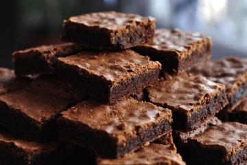

Receita Brownie

Descrição:
Veja como preparar um brownie simples e rápido. Esta receita oferece uma maneira prática de criar esses deliciosos quadrados de chocolate, com ingredientes básicos.
Ingredientes:
- 5 colheres de manteiga
- 3 xicara de achocolatado
- 12 colheres de farinha de trigo
- 3 ovos
- 6 colheres de açúcar
Modo de preparo:
- Derreta a manteiga e reserve.
- Enquanto derrete a manteiga, misture os 3 ovos e a açúcar e misture bem.
- Acrescente a manteiga derretida no ovo e o açúcar.
- Agora é so misturar o achocolatado e o trigo.
- Unte uma forma com manteiga e achocolatado.
- Leve ao forno a 180° C por 30 minutos.